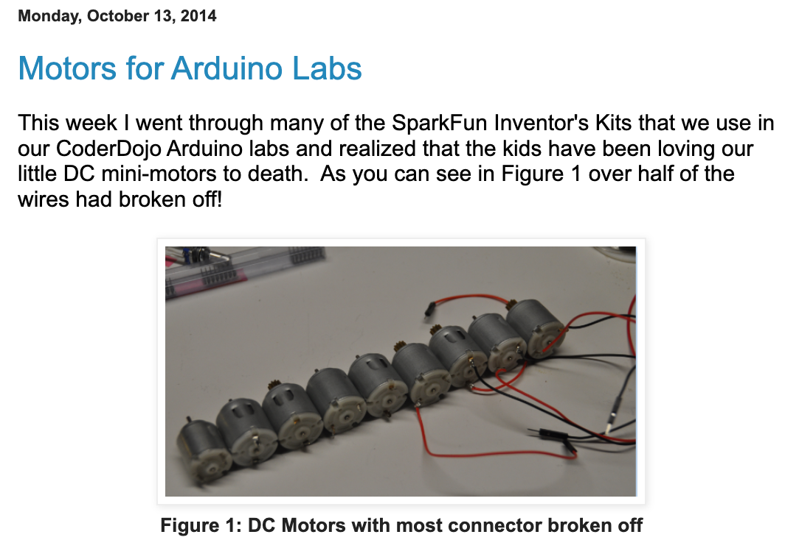

Intelligent Textbooks in 35 Minutes
Overview of Intelligent Textbooks in 35 Minutes
Democratizing Education for Using Intelligent Textbooks
{kind=link}
My Original Inspiration
Diamond Age: Neal Stephenson's 1995 Cyberpunk Novel
- A young girl is given an AI-powered tablet that imprints on the girl
- Every lesson the girl needs is customized to her context


Dan's Quest
- How would I build such a device?
{kind=link}
The Problem With Paper Textbooks
- The static textbook problem (printed in 2019, used in 2026)
- One-size-fits-all "Direct Instruction" model fails the 80% - the advanced bored, the struggling get lost
- Cost & access gap: US college students pay $1,300 per year on out-of-date printed textbooks
- The engagement crisis (passive reading vs. active learning)
- Teachers are drowning (no time to personalize)
Prompt Goal: "Generate a 1,000 page textbook on information systems with 100 MicroSims"
{kind=link}
Current Status
What you can do now (available since October 2025):
"Hey Claude, please generate a high quality interactive intelligent textbook.
Use Dan McCreary's intelligent textbook skills https://github.com/dmccreary/ibook-skills
Use the following course description...PATH TO YOUR COURSE DESCRIPTION...
Create a Learning Graph with 500 Concepts".
What is an Interactive Intelligent Textbook
- A textbook with "a brain" (learning graph) that can be classified into five levels
- A simple but powerful network of concepts and their learning order dependencies
- A simple classification system for concepts (taxonomy)
- Forced interactivity (few plan-old-images)
- No reliance on bandwidth hungry videos
- Small lightweight simulations (500 lines of JavaScript in an 10K byte download)
- Focus on structures that generate events that predict student mastery of a concept
- Hooks for easy migration to a xAPI/LRS infrastructure
- Designed to migrate from level 2.9 to level 5 without changing the data structures
Health Education
Hey Claude, Please generate age-appropriate six textbooks base in the Minnesota Department of Education guidelines:
{kind=link}
Generated six textbooks which shared content.
Infographic Posters

Local Minnesota Participants
- The Thinking Spot - Monday "Office Hours"
- Rima Parikh - Coding Club and STEM Kits
- Arun Batchu - Testing Skills, Scratch
- Rick Tanler - Understanding Dementia
- MicroSims
- Valarie Lockhart - Originator of MicroSims
- Troy Peterson - WikiTube
- ISD 197
- Miles Lawson - Digital Citizen Ship
- Peter Olson-Skog
- Groves Learning Organization
- Curtis Olufsin - Automation, ASL
- Andy Tolin - Coding Club
- My Mentees
- Anvith Pothula - Graph Neural Network Textbook
- Rishik Kondadadi - Seizure Awareness in Minnesota Schools
- Stone Arch Collaborative
- Shannon Seaver - AI Leadership in schools - CreateMPLS
- Dr. Randy Smasal - Change management consulting
- Lori Ryan - textbooks for marketing and brand management
- Stephanie Lensing - textbooks for marketing and brand management
- University of St. Thomas
- Dan Yarmoluk - Digital Transformation
- 12 Student Textbooks
- University of Minnesota
- Dr. Sharat Bhatra - Circuits, Senior Seminar, 12 Students
- Dr. Jarvis Haupt - Signal Processing
- Dr. Gan Qui - Physics of Semiconductor Devices
What It Will Generate
- Extended Course Description - enriched with Learning Objectives using the Bloom Taxonomy and Quality Score
- Inferred Concept List - between prerequisites and objectives
- Learning Graph (Concept Dependency Graph) - the ground truth of the textbook
- Book Mascot Character Sheet - enhanced engagement
- Book Chapter Design - Focus on coverage and balance
- Book Chapter Content - heart of the textbook
- Placeholders for diagrams, figures, drawings, infographics, simulations - all interactive
- Microsims - interactive elements that tracks mouse events (hover and clicks)
- Glossary of Terms - precise, concise, distinct definitions with examples and links
- FAQ - common questions and answers with links
- Quizzes - multiple choice
- References - with annotations for relevance
- Graphic Novel Stories
- Book Type Specific Concent - code executions, circuit simulations, timelines, maps, pronunciation, flashcards, lesson plans, challenge cards, kit book covers
- Custom Cover Page - social media previews
- About this Book
- Landing Page with cover
- Appendices, Contact, License, Teachers and Instructor's Guides
- Book statics - quality reports, book metrics, reading level checks
- Book announcements for social media and README.md
MicroSims

{kind=link}
MicroSim Uniqueness
The Five Levels of Intelligent Textbooks
Timeline of Intelligent Textbooks
Productivity Jumps
Final 10 Hours
- Most time-consuming tasks was user interface layout cleanup of the MicroSims (placement)
- New Claude Vision tool now "sees" UI and will apply layout fixes
- Saves and additional 3-4 hours per book
- Automation of mascot design and cover design also saves 1 hour
Current Status (this is real now)
- 120 level 2.99 Books
- Getting ready to go to level 3 (cost effectively) using xAPI and LRS
- 6,000 MicroSims
- 350+ Mini Graphic Novels
- 300+ Interactive Infographic Posters
- Ongoing research on Automating Instructional Design
- Continued integration of The Learning Sciences
Target Classroom
The target classroom is a remote school in Africa that has limited internet bandwidth. Our goal is to give each of these students the same MIT-caliber education as the most advanced colleges and universities in the US today.
{kind=link}
The Bouncing Ball MicroSim Example
Animal Cell (Interactive Infographic Overlay)
Biogeochemical Cycles (Water, Nitrogen, Carbon, Phosphorus)
Challenges Getting LLMs to Generate Consistent Content
- Getting LLMs to generate consistent simulation interfaces
- Every diagram MUST be interactive (for level 3 xAPI enabled)
- No static images or drawing
- Complex infographics are great, but overlay interactive region hovers
How I Generate Intelligent Textbooks
- Course description (100 point scale)
- => Learning graph
- => Chapter design
- => Chapter content generation (with mascot and microsim specifications)
- => MicroSim generation
- => Supplementary content generations (glossary, faq, quizzes, lesson plans, references)
- => Automated quality assessment (coverage, metrics, scaffolding)
Learning Graph
- Core data structure behind content generation and hyper-personalization.
- Directed Acyclic Graph of concepts and their learning order
Computer Science (400) Information Systems (580)
Book Mascots
{kind=link}
Sample Titles
1 2 3 4 5 6 7 8 9 10 11 12 13 14 15 16 17 18 19 20 | |
Leveling Up Your Intelligent Textbooks
{kind=link}
Leveling Up Your Intelligent Textbooks Text
- Static walls of text
- second level "Hand coded simulations"
- GenAI generated simulations
- Claude Code assembled textbooks in GitHub
- Claude Code Skills to generate consistent content
- Use the Claude Code Skill Generator to generate new skills
- Use Claude Code to token optimize skills
- Use Claude Code to do process mining to improve skills quality and value
Skills for Developing Intelligent Textbooks
- Created with Claude Code starting around October 2025
- Currently about 13 core skills
- Thoroughly tested with Claude Code works on OpenAI ChatGPT and Google Gemini
- Continually being optimized for token efficiency - targeting $2/textbook
The Democratization of Education
-
A Side Effect of Dan's Quest
-
How would the world change if a 12-year old girl from the remote regions of Africa has access to the same quality of hyper-personalized education as every student at MIT?
-
How could we use intelligent textbooks to democratize education for all children on Earth?
-
Should an ultra-high quality of hyper-personalized education be free for all children on earth?
The Democratization of Education

Making Teaching Fun
- From "Sage on the Stage" to Guide on the Side
Making Chatbot 41x lower Cost

Call to Action
- Try it out yourself!
- Requires a $20/month Claude Pro, ChatGPT or Google Gemini account
- Use Claude Sonnet for 95% of skills
- Generate 6-8 textbooks per month (in three 5 hour windows per day)
- Per textbook cost \(2-\)3 depending on complexity of MicroSims
Because every child on Earth can be Nell